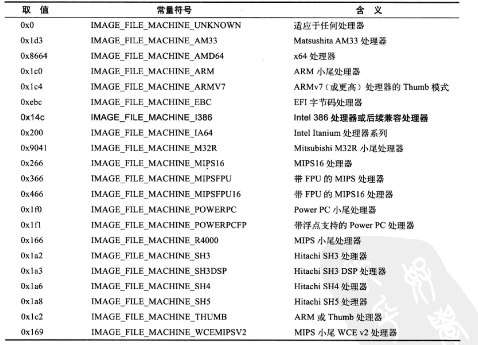
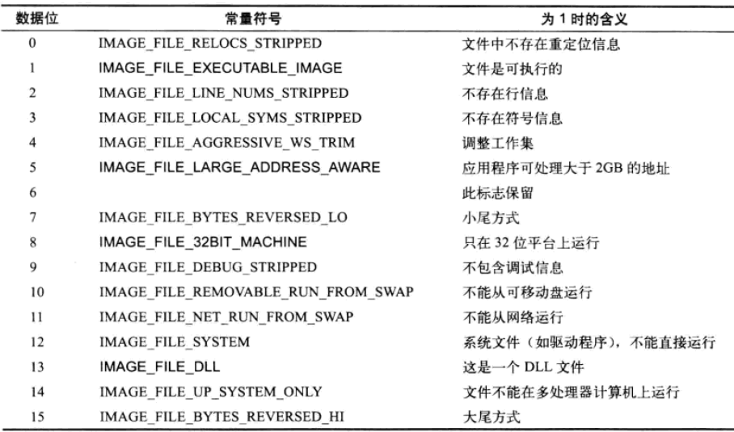
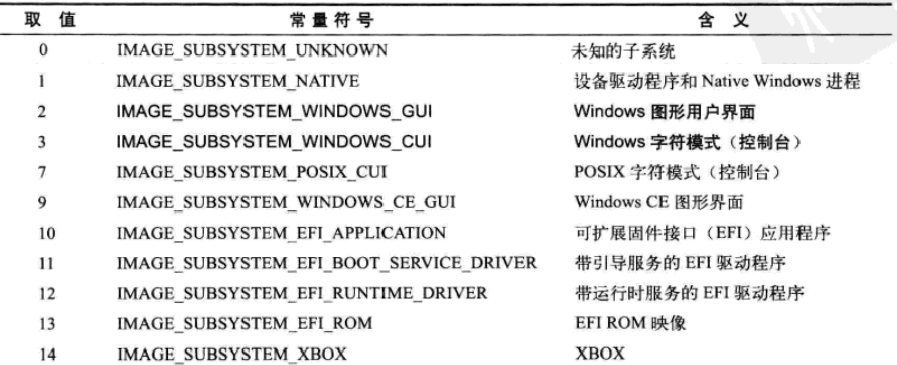
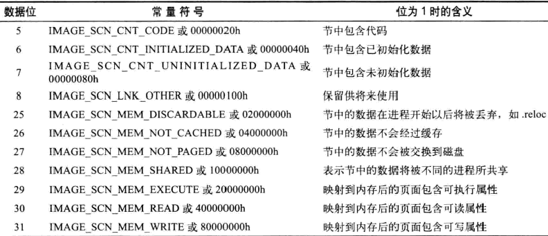

WinPE基本结构
PE 结构
|
| 结构名 | 大小 | 偏移 | 含义 |
| e_magic | WORD | 0000h | 可执行文件标志"MZ" |
| e_cblp | ... | 0002h | 最后部分页中的字节数 |
| e_cb | ... | 0004h | 文件中全部和部分也数 |
| e_crlc | ... | 0006h | 重定位表中的指针 |
| e_cparhdr | ... | 0008h | 头部尺寸 以段落为单位 |
| e_minalloc | ... | 000ah | 所需的最小附加段 |
| e_maxalloc | ... | 000ch | 所需要最大附加段 |
| e_ss | ... | 000eh | 初始的SS值 (相对偏移量) |
| e_sp | ... | 0010h | 初始的SP值 |
| e_csum | ... | 0012h | 补码校验值 |
| e_ip | ... | 0014h | 初始的IP值 |
| e_cs | ... | 0016h | 初始的CS值 |
| e_lfarlc | ... | 0018h | 重定位表达字节偏移量 |
| e_ovno | ... | 001ah | 覆盖符号 |
| 下为32位程序中才定义的数据 | |||
| e_res | WORD | 001ch | 保留字 |
| e_oemid | ... | 0024h | OEM标识符 |
| e_oeminfo | ... | 0026h | OEM信息 |
| e_res2 | ... | 0028h | 保留字 |
| e_lfanew | DWORD | 003ch | PE头 相对DOS头偏移 |
PE 头 IMAGE_NT_HEADERS STRUCT Signature +0000h 4字节 50450000 既 PE FileHeader +0004h 指向IMAGE_FILE_HEADER结构 OptionalHeader +0018h 指向IMAGE_OPTIONAL_HEADER32结构
Machine +0004h 指定PE文件运行的平台 NumberOfSections +0006h 存在节总数[1,96] 可以没有节但此值不能为0 此值必须等于内存中实际存在节数 TimeDateStamp +0008h 编译器创建此文件的时间戳 低32位存自1970-01-01 00：00至今秒数 PointerToSymbolTable +000ch COFF符号表文件偏移 若不存在为0 映像文件为0 微软已经不赞成在PE中使用COFF调试信息 NumberOfSysmbols +0010h 符号表中元素数目为0原因同上 SizeOfOptionalHeader +0014h IMAGE_OPTIONAL_HEADER 的长度 Characteristics +0016h 文件属性字段
Machine取值

Characteristics每位取值

Magic +0018 说明文件类型 010B(PE32文件) 0107(ROM映像) 020B(PE32+ 既64位PE文件) MajorLinkerVersion +001A 链接器版本主版本号 MinorLinkerVersion +001B 链接器版本次版本号 SizeOfCode +001c 所有代码节总和(以字节为单位) 文件对齐后大小 SizeOfInitializedData +0020 所有包含已经初始化的数据的节的总大小 SizeOfUninitializedData +0024 ...未初始化... AddressOfEntryPoint +0028 oep的偏移 BaseOfCode +002c 代码节起始RVA 通常名.text BaseOfData +0030 数据节起始RVA 通常名.data ImageBase +0034 PE映像优先装入地址 取值必须64kb的整数倍 SectionAlignment +0038 内存对齐 win32页面对齐最小说4KB 既01000h SectionAlignment小于页面大小时 必须等于 FileAlignment FileAlignment +003c 文件对齐 一般为512(一个物理扇区大小) 既200h //+0040 操作系统版本号 MajorOperatingSystemVersion MinorOperatingSystemVersion //+0044 PE文件映像版本号 MajorImageVersion MinorImageVersion //+0048 运行所需的子系统的版本号 MajorSubsystemVersion MinorSubsystemVersion Win32VersionValue +004c 子系统版本值必须为0 暂未使用 SizeOfImage +0050 内存中PE文件尺寸 可以比实际值大 但不能小于 且必须是 SectionAlignment的整数倍 SizeOfHeaders +0054 所有头+节表文件对齐后代大小 CheckSun +0058 校验和 对大多数PE应该为0 一些内核驱动和系统dll此值必须正确 Subsysem +005c 界面子系统 DllCharacteristics +005e DLL文件属性(针对所有PE 不只dll) SizeOfStackReserve +0060 初始化时保留栈的大小 SizeOfStackCommit +0064 初始化时实际提交的栈大小 SizeOfHeapReserve +0068 初始化时保留的堆大小 SizeOfHeapCommit +006c 初始化时实际提交的堆大小 LoaderFlags +0070 加载标志 NumberOfRvaAndSize +0074 定义数据目录结构数量 一般10h既然16个 可取[2,16] DataDirectory +0078 由16个IMAGE_DATA_DIRECTORY结构线性排列而成 用于定义PE中16种不同类别数据所在位置和大小
IMAGE_DATA_DIRECTORY STRUCT
DWORD 0000h VirtualAddress 数据起始RVA
DWORD 0004h isize 数据块长度
0 导出表所在节 通常命名为 .edata 1 导入表所在节 通常命名为 .idata 2 资源表所在的节 通常命名为 .pdata 3 异常表所在的节 通常命名为 .rsrc 4 属性证书 该数据不会作为映像被加载到内存 5 基址重定位所在节 通常命名为 .reloc 6 调试数据所在节 通常命名为 .debug 指向IMAGE_DEBUG_DIRECTORY结构数组 7 预留必须为0 8 Global Ptr 数据描述的是被存储在全局指针寄存器中的一个值 9 线程本地存储数据所在节 通常命名为 .tls 10 加载配置信息 用于包含保留的SEH技术 11 绑定导入数据 12 IAT导入地址表(既导入函数地址表地址和大小) 13 延迟导入数据 14 CLR数据所在节 通常命名为.cormeta .NET框架程序常用 15 系统预留 未定义
IMAGE_SECTION_HEADER STRUCT Name +0000h 8字节字符串 一般以\0结尾 ascii码 如果不以\0结尾 系统取8字节 Misc +0008h 节的数据在没对齐前端真实尺寸 (但许多PE此值不准确) VirtualAddress +000ch 节区的RVA SizeOfRawData +0010h 节在文件中对齐后代尺寸 PointerToRawData +0014h 节起始数据在文件中的偏移 PointerToRelocations +0018h 在 .obj 文件中使用 指向重定位表的指针 PointerToLinenumbers +001ch 行号表达位置(供调试用) NumberOfRelocations +0020h 重定位表达个数(在 OBJ 文件中使用) NumberOfLinenumbers +0022h 行号表中行号的数量 Characyeristics +0024h 节属性 代码节一般 60000020h 数据节 C0000040hCharacyeristics取值
